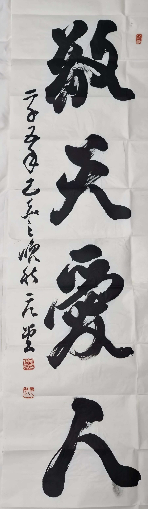

작품 상세 정보
분류: 전통서예 작품 (작품 06,지본3)
중심 대자: 敬天愛人 (경천애인)
형식: 전통 세로 족자 (협시 및 낙관 포함)
작가: 원당 김제운
해설 및 의미
1. 중심 글자 (대자)
가장 크게 적힌 글자들은 위에서부터 순서대로 「敬天愛人 (경천애인)」입니다. "하늘을 공경하고 사람을 사랑한다"는 뜻으로, 기독교 및 동양 철학에서 강조하는 근본 정신이자 도덕적 가치관을 담고 있습니다.
2. 협시 (작은 글씨 내용)
좌측에 세로로 적힌 작은 글씨에는 간지(예: '을유(乙酉)' 등 작성 연도 추정)와 작가의 서명, 그리고 하단에 붉은색 낙관(인장)이 선명하게 찍혀 있습니다. 우측 상단에도 낙관이 함께 포함되어 있습니다.
요약 및 감상
이 작품은 '하늘을 공경하고 이웃(사람)을 사랑하라'는 깊은 종교적·윤리적 가르침인 경천애인(敬天愛人)의 정신을 굵고 힘찬 필치로 담아낸 서예 작품입니다.